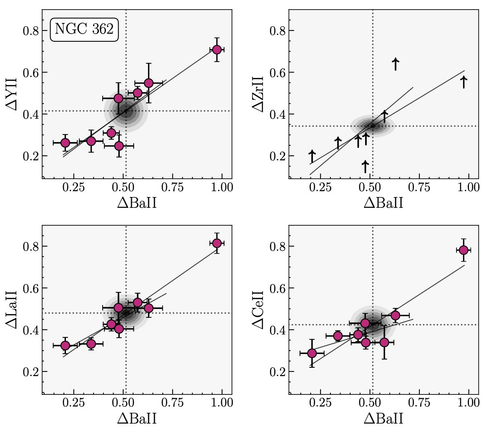
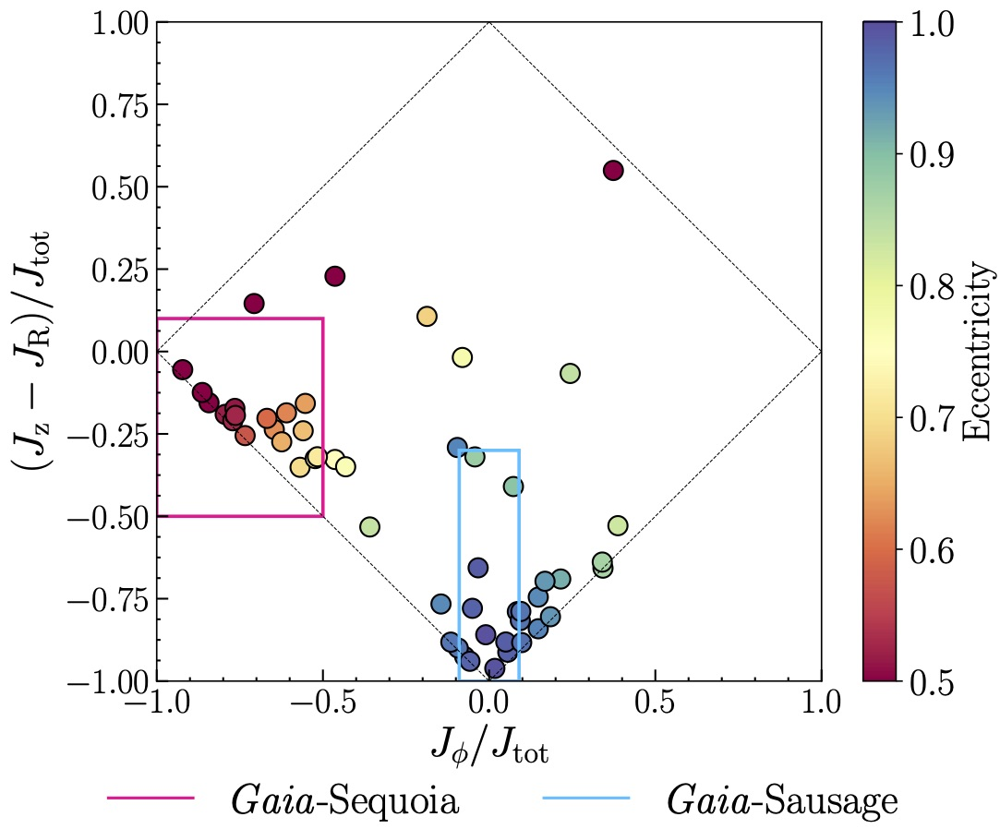

I'm an astronomer working in the areas of Galactic Archaeology and astronomical instrumentation.
Currently, I'm employed as a post-doctoral researcher at the Institute of Astronomy, Cambridge working within the Stellar Streams group (led by Profs. Vasily Belokurov and Wyn Evans.) Prior to joining the IoA, I completed my PhD in Astrophysics in October 2022 at the Australian National University. My PhD was supervised by Em. Prof. Ken Freeman and Prof. Francois Rigaut and focused on both science and instrumentation. My scientific research is focused primarily on Galactic Archaeology: the fomation history of The Milky Way, globular clusters and dwarf galaxies. My favourite way to study these objects is through combining chemical abundance information and dynamics (chemodynamics) using high resolution spectra and Gaia data. On the instrumentation side, I'm a high resolution enthuisiast, focused primarily on adaptive optics and high resolution spectroscopy. For more information on both my scientific and instrumentation interests, please read on!
As a displaced West Coast Canadian, I'm always searching for big trees, tall mountains and the ocean. Luckily the UK has one of those things! Outside of work, I enjoy making music, the gentle art of Brazilian Jiu-Jitsu, hiking and my Aussie-Canadian family.
How do we go from asking scientific questions to constraining instrumental characteristics?
ESO AOF:
ESO/F.Kamphues
Milky Way
How did our galaxy come to be? When and where did the stars in the Milky Way form?
Sagittarius and the MW: NASA/JPL-Caltech/R. Hurt (SSC/Caltech)
Clusters
Are some GCs actually dwarf galaxy nuclei? Can they be used as tracers of the assembly history of the MW?
NGC 2419: PanSTARRS DR1
High Precision Chemical Abundances of Stars
I use high resolution spectroscopic data (R>45,000) to measure chemical abundances (everything heavier than He!) in stars. The chemical content of stars can reflect both, i) the elements created within the stars via nucleosynthesis and/or ii) the primordial chemical content of the gas in which the star formed. I generally explore the second scenario, using the abundances I measure to examine what the chemical content of the Universe was like when the star formed. Which elements I measure and how much of each is contained in a given star can inform what types of objects enriched the Universe early on. For example, the abundance of the heavy element Eu relative to other elements can tell me how common exotic phenomena like neutron star mergers were at the time the star formed.
Recently, in Monty et al. 2022, I measured the chemical abundances of stars in the globular clusters, NGC 288 and NGC 362. Two results from this study were, i) that both clusters showed significant star-to-star differences in many elements (see the figure) and ii) that NGC 362 showed an enhancement in Eu which we suggest is primoridal. The first conclusion implies the primoridal gas in which the stars formed was inhomogeneous - informing cluster formation theories. The second conclusion implies that exotic processes like neutron star mergers were important in the environment where the cluster formed.
Coupling Chemistry and Dynamics to Explore Object Histories
To augment my chemical abundance measurements, I explore the dynamical properties of stars and globular clusters. To do this, I combine the positions and velocities of objects from high resolution spectra and astrometrically by the Gaia space telescope (sci.esa.int/gaia/), with dynamical modeling software like galpy and AGAMA to the orbits of objects. Orbital characteristics of objects reveal what component of the Milky Way they belong to (e.g. the Milky Way halo vs the disc). They can also be used to explore if the object formed within the Milky Way or externally in another galaxy that was accreted earlier on in the Milky Way's history (via galactic cannibalisim!).
In Monty et al. 2020 I re-examined a set of 55 Milky Way halo stars from the study of Stephens & Boesgaard, 2002, re-deriving the chemical abundances and orbital characteristics of the sample. Through calculating the actions of the stars in the sample (orbital characteristics that remain the same for all time, under certain assumptions), we identified 11 stars that were dynamically coincident with the Gaia-Encelaudus-Sausage (GSE, Belokurov et al. 2018, Helmi et al. 2018) dwarf galaxy accretion event and another 17 associated with the Sequoia (Myeong et al. 2019) accretion event (see figure). When examining the trend of [α/Fe] vs. metallicity we found unique locations of the "low-alpha knee" in GSE vs. MW and Sequoia vs. MW stars - suggesting unique star formation histories.
Dynamical Evolution of Globular Clusters
Globular clusters are fantastic objects to study both chemically and dynamically. Chemically, they host a plethora of bright, ancient stars making them great targets for chemical abundance analysis. Dynamically, they serve as test particles to probe the gravitational potential of the Milky Way (acting like point particles) and as hosts of hundreds of thousands to millions of test particles probing gravitational interactions within the cluster. Thankfully, decades of research into the theoretical models of the dynamical evolution of clusters has laid the groundwork for follow-up today with high fidelity N-body simulations. With the aid of graphical processing units (GPUs), N-body simulations can now track the evolution of millions of stars within a cluster over the course of a billions of years and multiple orbits around the Milky Way.
Using a GPU-accelerated version of NBODY6 NBODY6+P3T written by Anthony Arnold (UQ), I'm investigating the dynamical history of some of the most extreme Milky Way globular clusters. Stay tuned!
I am a member of the science team working on the next generation ESO instrument, MAVIS. The MCAO Assisted Visible Imager and Spectrograph, a proposed instrument for the European Southern Observatory's Very Large Telescope (ESO/VLT) Adaptive Optics Facility (AOF). MAVIS will use multi-conjugate adaptive optics to correct for optical aberrations introduced by the Earth's atmosphere, essentially removing the "twinkle" from the stars. MAVIS will be the first MCAO instrument to do this in the visible (450-980nm) and is expected to outperform the Hubble Space Telescope in many respects. For more information on the instrumental specifics see mavis-ao.org.
In the past, I've also worked in the lab to test astronomical fibres as part of the development of both the Pyxis interferometric, planet finding instrument and the Mauna Kea Spectroscopic Explorer fibre transmission system (FiTS).
The MAVIS Image Simulator (MAVISIM)
The focus of my PhD work is the intersection of science and instrumentation with MAVIS (see About for introduction to MAVIS). As part of that I'm working on creating a simulated imaging tool for MAVIS to investigate the projected sensitivity, throughput and image quality of the MAVIS imager. The goal of this project is to create a fully enclosed python package for use by potential MAVIS scientists to test and refine science cases.
Automated Testing of Astronomical Fibres
Summarise FiTS
Chemodynamics of Outerhalo Stars
This is work I've recently completed with Professor Kim Venn from the University of Victoria and James Lane from the University of Toronto (Monty et al, 2019). Together we re-examined a set of 55 dwarf stars in the Milky Way's Outerhalo first studied by Stephens & Boesgaard in 2002. The formation history of the Milky Way is not a quiet one and likely involved several major mergers with smaller dwarf galaxies to create the massive evolved galaxy of today. As the dwarf galaxies were drawn inwards towards the Milky Way, they would have experienced tidal stripping, or the disruption and removal of member stars. The bulk of these alien stars are thought to comprise the bulk of the Milky Way's halo. By studying halo stars with chemical and dynamical signatures that hint at external origins, we can probe the long and potentially violent history of the Milky Way. Using Gaia DR2 and updated atmospheric and atomic data, we re-derived the stellar parameters for all of the stars and updated the abundances for a subset of six stars that showed lower alpha (Mg, Ca, Si and Ti) abundances in the original study. We also re-derived the orbits for all the stars in the study and then used their orbital parameters to classify them as members of two proposed accretion events, the Gaia-Sausage (or Gaia-Enceladus) accretion event and the Gaia-Sequoia event. We found that in addition to having unique dynamical signatures, the stars showed signs of unique chemical signatures as well. I'm currently working on the referee report now, more to come!
A Dynamical Study of NGC 2419
NGC 2419 is an interesting Milky Way globular cluster, as it's one of the most massive and distant clusters Milky Way halo. Being so distant, it's escaped any tidal interactions with the galaxy, making it a pristine environment for testing theories of globular cluster formation. Using spectroscopic data from the centre and exterior regions of the cluster, I plan to use Jean's modeling and N-body made-to-measure techniques to perform a complete dynamical study of 2419.
I completed a joint PhD in observational astronomy and astronomical instrumentation working with Emeritus Professor Ken Freeman, Professor Francois Rigaut, Dr. David Yong and Dr. Trevor Mendel. My thesis explored the formation and evolution of globular clusters using high resolution spectroscopy and dynamical modeling. I also investigated the chemodynamical history of the Milky Way, using both individual MW stars and globular clusters. On the instrumentation side, I created the MAVISIM image simulator for the next generation ESO instrument MAVIS and explored the predicted astrometric capabilities of MAVIS.
I completed my bachelor degree at UVic with an honours combined major in astronomy and physics and a minor in mechanical engineering in 2018. As part of my degree I completed four, four month co-op placements, two at the National Research Council of Canada and two at Gemini Observatory. My honours thesis was supervised by Professors Kim Venn, Thomas Puzia (PUC) and Gemini South astronomers Drs Rodrigo Carrasco and Bryan Miller and focused on examining the binary star populations of the Milky Way globular clusters NGC 3201 and 2298. I looked at the distribution and frequency of the binary systems using near-IR multi-conjugate data from GeMS at Gemini South. As part of my mechanical engineering minor I worked on automating the testing of astronomical fibres for the Mauna Kea Spectroscopic Explorer.